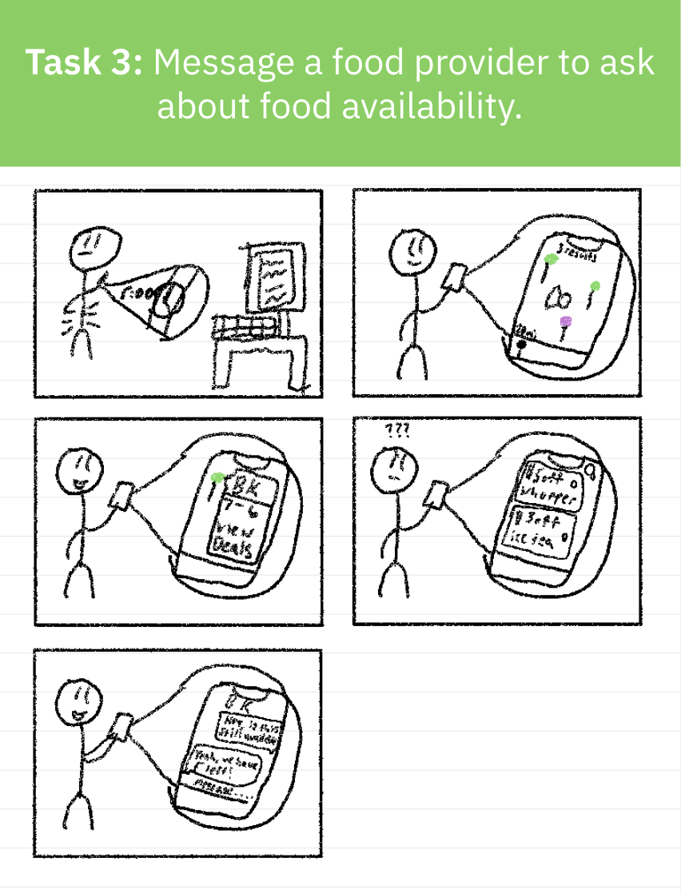
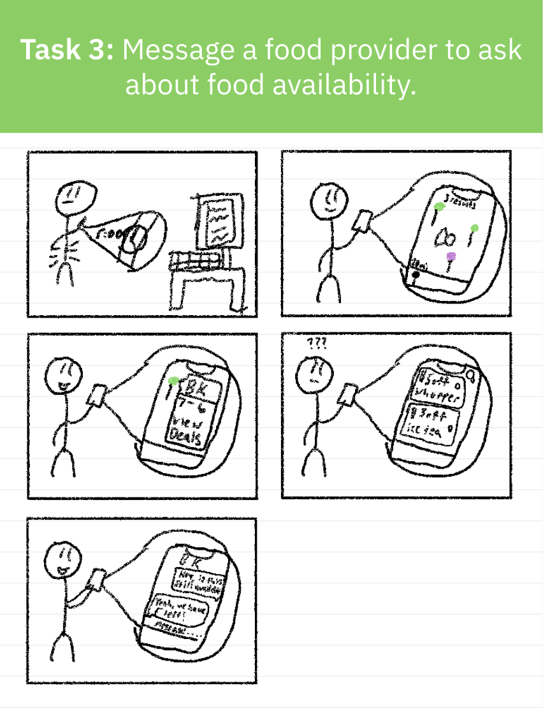

Since we are college students, we would want to get as much information as possible to ensure we are accounting for everything and emphasize things that could be more important. We also want to try to be in the point of view of the target audience as much as possible. Below is some of the methods we would use to make this possible.
Surveys
Design Ethnography
Interviewing
Online Research
Based on our findings, we created a detailed persona representing our primary user

We mapped out the end-to-end experience of users from discovering the platform to receiving food assistance, identifying points and opportunities for improvement.
For our application, we divided our key features we want to show off in three tasks. Below are rough sketches of storyboards of how the user is going to interact with our application based on the task that hey are trying to achieve.

 

The first conceptual design layout was created in Canva, and it served as a starting point of how we want our application to be laid out. Features in this concept included easy to read tabs and pinpoints on where select food deals may be.

After presenting this, we got feedback on making a volunteer persona and to have volunteer events from volunteers who signed up for our application to be presented in a different pinpoint color to the target user audience. This is where we got inspiration for our second task of our storyboard.